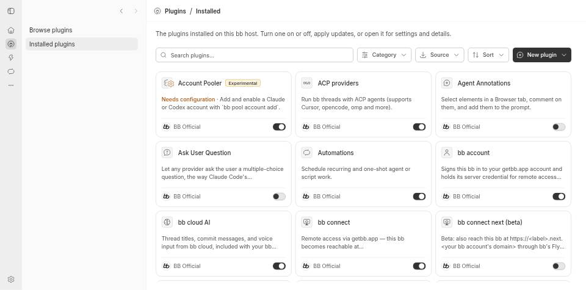
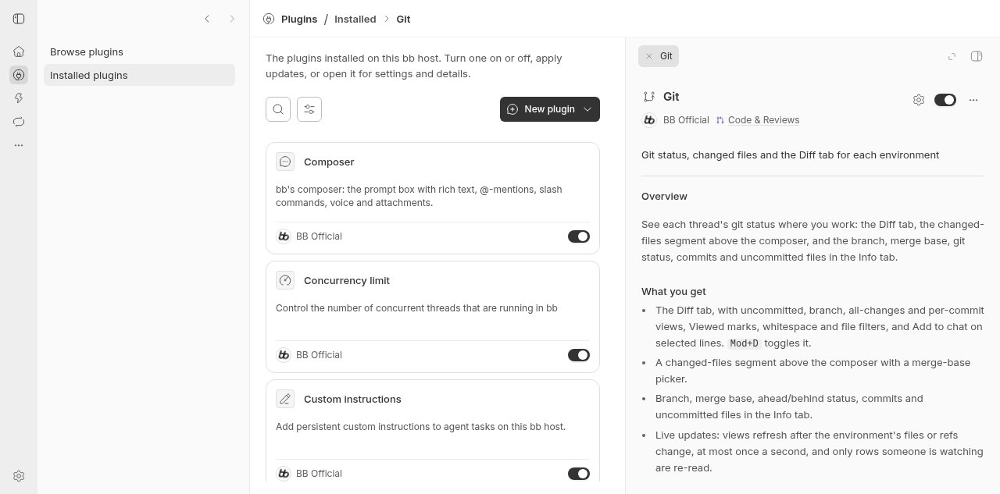
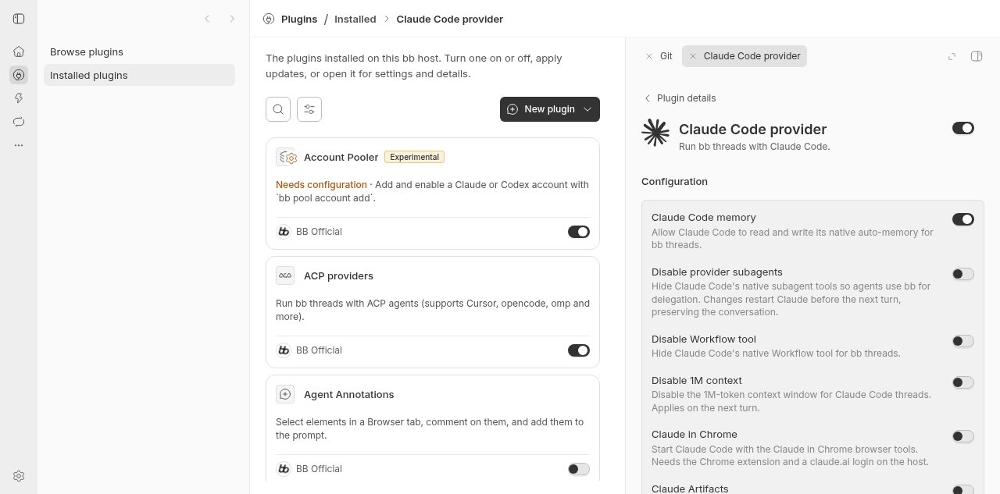

#6817 · Unbounded plugin detail pane prevents scrolling
Verdict: REPRODUCED · Root-cause confidence: high · reproduction label: confirmed-repro
1. TL;DR
The right-hand plugin detail tab expands to the height of its contents instead of the space available in the panel. Its internal scroll container therefore has no overflow, while an outer container clips the content. This makes long descriptions and long configuration forms unreachable. The failure occurs with bundled plugins in a fresh source development instance, without third-party code or a provider turn. A second clean checkout reproduces both cases.
2. Claims vs findings
| Claim | Finding | Evidence |
|---|---|---|
| Long plugin details cannot scroll. | Verified | Bundled Git details have clientHeight = scrollHeight and remain at scrollTop 0 after a native scroll request. |
| Configuration can also be clipped. | Verified | Bundled Claude Code configuration expands to 842px; the 537px panel body clips it. |
| The host layout, not a third-party plugin, causes the failure. | Verified | Both examples use trusted bundled plugins; their common pane exceeds its block parent's bounded height. |
| Standalone settings are a workaround. | Verified for the tested bundled form | At the standalone settings route on the unchanged second checkout, the form has clientHeight 585, scrollHeight 734, and reaches scrollTop 149. |
| The packaged macOS build and a third-party plugin behave identically. | Not separately verified | This investigation uses Linux headless Chrome and trusted source only. No macOS build, third-party plugin, user runtime data, issue attachment, or issue-linked code was executed. |
3. Environment
- Public repository:
get-bb/bb; trusted main commit shown above, fetched and verified against the target repository. - Linux x86_64, kernel 4.19.0-gvisor; Node 22.19.0; Chrome 156.0.8078.79 headless; 1280 × 633 browser viewport.
- First instance: app 18949, server 26949, host daemon 34949. Second instance: app 14973, server 22973, host daemon 30973.
- Each checkout has its own newly created development store and marker. Neither uses imported data or the user's installed app. No provider session is involved.
- Both checkouts installed the frozen lockfile and built all 72 Turbo build tasks. The first initial build required building the existing Plugin SDK runtime before retrying; no dependencies or lockfiles changed.
4. Minimal reproduction
- Check out the recorded main commit in a clean directory. Run
pnpm install --frozen-lockfile --prefer-offline,pnpm exec turbo run build --filter=@get-bb/plugin-sdk, thenpnpm exec turbo run build. - Start
pnpm devwith a fresh checkout-specific store, as documented indocs/debugging-and-qa.md. Open its printed app URL in a BB Browser Automation headless session, at a desktop-size viewport. - Open Plugins → Installed plugins, select Git, and try scrolling the right panel. Its lower description and capabilities are clipped.
- Open Claude Code provider, then its gear/configuration view. The lower controls are similarly clipped. Do not change any settings.
- Run the linked behavioral regression script with the main browser page already on the isolated app. It opens both routes, waits for actual content, requests scrolling to the end, and checks containment and scroll progress.
bb browser-automation run SESSION --script-file "$PWD/apps/app/scripts/plugin-detail-scroll.browser.js" --script-host HOST_ID --timeout 60s --json
Expected: both scroll containers stay within the panel, have content taller than their viewport, and reach the end with scrollTop > 0. Actual:
First checkout: Git details: clientHeight=2233, scrollHeight=2233, scrollTop=0, contained=false Claude configuration: clientHeight=842, scrollHeight=842, scrollTop=0, contained=false exitCode=1 Error: Plugin details and configuration must scroll inside the right panel Second clean checkout: Git details: clientHeight=1676, scrollHeight=1676, scrollTop=0, contained=false Claude configuration: clientHeight=842, scrollHeight=842, scrollTop=0, contained=false exitCode=1 Error: Plugin details and configuration must scroll inside the right panel
Git content height differs with persisted panel width; neither run has a working scroll range. The script checks behavior rather than a particular Tailwind class or pixel height. Short forms that fit inside the panel do not demonstrate the failure.



Executable regression script · First run output · Second run output
Regression script source
const page = await browser.getPage("main");
const origin = await page.evaluate(() => location.origin);
if (!/^http:\/\/(localhost|127\.0\.0\.1):\d+$/.test(origin)) {
throw new Error("Open an isolated local source app before running this test");
}
const results = [];
for (const scenario of [
{
path: "/plugins/bb--git?view=installed",
title: "Git",
readyText: "Capabilities",
},
{
path: "/plugins/provider-claude-code?view=installed&configure=provider-claude-code",
title: "Claude Code provider",
readyText: "Approvals in Full Access",
},
]) {
await page.goto(`${origin}${scenario.path}`);
await page.evaluate(async ({ title, readyText }) => {
for (let attempt = 0; attempt < 200; attempt++) {
const panel = document.querySelector("aside:has(h1)");
if (
panel?.querySelector("h1")?.textContent === title &&
panel.textContent.includes(readyText)
) {
await new Promise(requestAnimationFrame);
await new Promise(requestAnimationFrame);
return;
}
await new Promise((resolve) => setTimeout(resolve, 100));
}
throw new Error(`Plugin content did not become ready: ${title}`);
}, scenario);
const result = await page.evaluate(() => {
const panel = document.querySelector("aside:has(h1)");
const scroller = Array.from(panel.querySelectorAll("div")).find(
(element) => getComputedStyle(element).overflowY === "auto",
);
if (!scroller) throw new Error("Plugin scroll container is missing");
scroller.scrollTop = scroller.scrollHeight;
const bounds = scroller.getBoundingClientRect();
const panelBounds = panel.getBoundingClientRect();
return {
clientHeight: scroller.clientHeight,
scrollHeight: scroller.scrollHeight,
scrollTop: scroller.scrollTop,
contained: bounds.top >= panelBounds.top && bounds.bottom <= panelBounds.bottom + 1,
reachedEnd: Math.abs(scroller.scrollTop + scroller.clientHeight - scroller.scrollHeight) <= 1,
};
});
results.push({ path: scenario.path, ...result });
}
console.log(JSON.stringify(results, null, 2));
if (
results.some(
(result) =>
!result.contained ||
result.scrollTop <= 0 ||
result.scrollHeight <= result.clientHeight ||
!result.reachedEnd,
)
) {
throw new Error("Plugin details and configuration must scroll inside the right panel");
}5. Root cause
Plugin-detail tabs request the fill-region presentation. That presentation supplies a bounded block wrapper, not a flex container. PluginDetailPaneView is itself a flex column, but its flex-1 does not make it fill that block parent's height. With automatic height it instead expands with its descendants.
ResourceScrollPage contains the real overflow-y-auto element with a full-height wrapper. Because that height follows the already-expanded pane, clientHeight equals scrollHeight and a native scrollTop assignment clamps to zero. The outer overflow-hidden wrapper then clips the remaining content.
Observed first-run ancestor chain, Git details: inner overflow-y-auto: display=block, client=2233, scroll=2233 PluginDetailPaneView root: display=flex, client=2233 immediate panel slot: display=block, client=537, scroll=2233, overflowY=hidden
6. Proposed fix
Give the shared plugin detail pane an explicit height matching its containing block so that the existing flex descendants and internal scroll container have a bounded viewport. Preserve the scroll owner, routing, configuration lifecycle, and panel host contract. Validate both long details and long configuration with the attached browser regression, plus the existing plugin-detail and secondary-panel suites. No protocol, schema, dependency, or stored-data change is needed.
7. Verification
The same agent repeated the reproduction, not an independent reviewer. The second checkout was a newly created detached worktree at the full recorded base SHA, with no production edits, its own frozen install/build, fresh store, different app/server/daemon ports, and a fresh headless browser session. Its command was the same bb browser-automation run invocation with the attached script, after opening app port 14973. Both scenarios fail for the intended containment and scroll-progress assertions. Only the measured Git content height was corrected for its different panel width; the verdict and root-cause mechanism are unchanged.
No open pull request linked to #6817 was found through issue timeline metadata and an open-PR search at investigation time.
8. Related issues and limits
Search results included broader plugin UI work, but no duplicate open fix was found for this issue. The report does not claim verification of native macOS wheel handling, PageDown, iOS drawers, or third-party plugins. Its proof is a real browser layout and native scroll-position test of the affected shared host pane.
9. Appendix
Relevant source checks used the recorded trusted commit. Browser screenshots are real captures; the published PNG files are losslessly converted from the automation tool's JPEG output. Raw regression results are linked above. Full builds passed in both checkouts. The verification-skill inventory check reported pre-existing unmapped CLI-family drift, unrelated to this pane; no inventory baseline was rewritten.
Untrusted-data handling: Issue text and suggestions were treated only as hypotheses. No issue instructions, external links, patches, scripts, attachments, or linked branches were followed or executed. The test and root-cause proposal were derived from trusted repository code and direct browser measurements.
> AGENT GENERATED